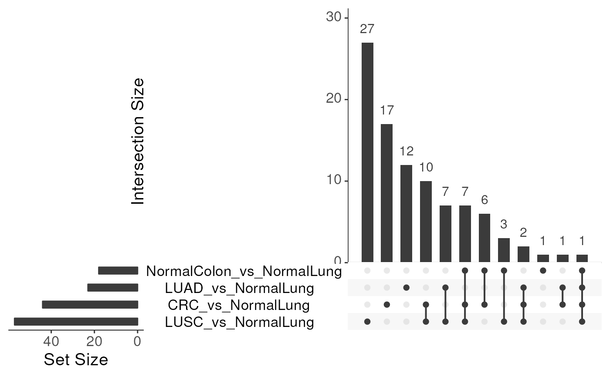
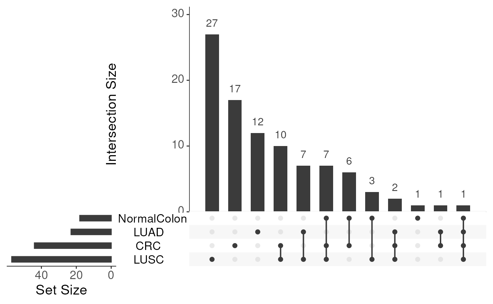

Visualise the overlap of significant DMR sets across contrasts (columns ending
with *_adjPval) using an UpSet plot.
plotDMRUpset(DMRtable, string = NULL, removeVS = FALSE, minAdjPval = 0.05, ...)data.frame.
Table as returned by calculateDMRs() (optionally pre-filtered).
character(1) or NULL.
Optional regular expression to subset the set/contrast names (applied after
stripping suffixes).
Default: NULL (use all sets).
logical(1).
If TRUE, remove the "_vs_" substring and everything after it from set
names (e.g., "Tumour_vs_Normal" → "Tumour").
Default: FALSE.
numeric(1).
Adjusted P-value threshold; windows with adjPval <= minAdjPval are included
in each set.
Default: 0.05.
Additional arguments forwarded to UpSetR::upset().
Draws an UpSet plot on the active device and invisibly returns the result
from UpSetR::upset() (for further customization if needed).
The function discovers DMR sets by locating columns that end with "_adjPval".
For each such column, a logical membership is formed at the chosen FDR cutoff
(minAdjPval). Optionally, set names are simplified with removeVS, and then
subset with string if provided. The resulting membership matrix is visualised
with UpSetR.
data(exampleTumourNormal, package = "mesa")
# Overlap of significant DMR sets across contrasts (default FDR 0.05)
exampleTumourNormal %>%
calculateDMRs(variable = "type", contrasts = "all_vs_NormalLung") %>%
plotDMRUpset()
#> Calculating all (4) possible contrasts against NormalLung on the type column.
#> Generating table of nrpm values for 819 regions across 10 samples.
#> Fitting initial GLM on 309 windows, without using parallelisation.
#> Performing contrast NormalColon_vs_NormalLung
#> Performing contrast CRC_vs_NormalLung
#> Performing contrast LUAD_vs_NormalLung
#> Performing contrast LUSC_vs_NormalLung
#> Contrasts Complete
#> selecting regions from contrast NormalColon_vs_NormalLung
#> selected 18/309 windows
#> selecting regions from contrast CRC_vs_NormalLung
#> selected 44/309 windows
#> selecting regions from contrast LUAD_vs_NormalLung
#> selected 23/309 windows
#> selecting regions from contrast LUSC_vs_NormalLung
#> selected 57/309 windows
#> adding test results from NormalColon_vs_NormalLung
#> adding test results from CRC_vs_NormalLung
#> adding test results from LUAD_vs_NormalLung
#> adding test results from LUSC_vs_NormalLung
#> Warning: `aes_string()` was deprecated in ggplot2 3.0.0.
#> ℹ Please use tidy evaluation idioms with `aes()`.
#> ℹ See also `vignette("ggplot2-in-packages")` for more information.
#> ℹ The deprecated feature was likely used in the UpSetR package.
#> Please report the issue to the authors.
#> Warning: Using `size` aesthetic for lines was deprecated in ggplot2 3.4.0.
#> ℹ Please use `linewidth` instead.
#> ℹ The deprecated feature was likely used in the UpSetR package.
#> Please report the issue to the authors.
#> Warning: The `size` argument of `element_line()` is deprecated as of ggplot2 3.4.0.
#> ℹ Please use the `linewidth` argument instead.
#> ℹ The deprecated feature was likely used in the UpSetR package.
#> Please report the issue to the authors.

# Clean set names by dropping the '_vs_*' suffix
exampleTumourNormal %>%
calculateDMRs(variable = "type", contrasts = "all_vs_NormalLung") %>%
plotDMRUpset(removeVS = TRUE)
#> Calculating all (4) possible contrasts against NormalLung on the type column.
#> Generating table of nrpm values for 819 regions across 10 samples.
#> Fitting initial GLM on 309 windows, without using parallelisation.
#> Performing contrast NormalColon_vs_NormalLung
#> Performing contrast CRC_vs_NormalLung
#> Performing contrast LUAD_vs_NormalLung
#> Performing contrast LUSC_vs_NormalLung
#> Contrasts Complete
#> selecting regions from contrast NormalColon_vs_NormalLung
#> selected 18/309 windows
#> selecting regions from contrast CRC_vs_NormalLung
#> selected 44/309 windows
#> selecting regions from contrast LUAD_vs_NormalLung
#> selected 23/309 windows
#> selecting regions from contrast LUSC_vs_NormalLung
#> selected 57/309 windows
#> adding test results from NormalColon_vs_NormalLung
#> adding test results from CRC_vs_NormalLung
#> adding test results from LUAD_vs_NormalLung
#> adding test results from LUSC_vs_NormalLung
